from pathlib import Path
file_name = "mouse044_task1_annotator1.slp.250811_154148.predictions.slp"
predictions_dir = Path.home() / ".movement" / "CalMS21" / "better_model" / "predictions"
file_path = predictions_dir / file_name4 Analysing tracks with movement
In this tutorial, we will introduce the main features of movement, a Python package for analysing animal motion tracks. You will be given a set of exercises to complete—using movement to analyse the pose tracks you’ve generated in Chapter 3 or any other tracking data you may have access to.
NoteUsing the right environment
If you are following along this chapter on your own computer, make sure to run all code snippets with the animals-in-motion-env environment activated (see prerequisites A.3.3). This also applies to launching the movement graphical user interface (Section 4.2).
4.1 What is movement?
In Chapters 1 and 2 we saw how the rise of deep learning-based markerless motion tracking tools is transforming the study of animal behaviour.
In Chapter 3 we dove deeper into SLEAP, a popular package for pose estimation and tracking. We saw how SLEAP and similar tools—like DeepLabCut and LightningPose—detect the positions of user-defined keypoints in video frames, group the keypoints into poses, and connect their identities across time into sequential collections we call pose tracks.
The extraction of pose tracks is often just the beginning of the analysis. Researchers use these tracks to investigate various aspects of animal behaviour, such as kinematics, spatial navigation, and social interactions, as part of the motion quantification step shown in Figure 1.5. Typically, these analyses involve custom, project-specific scripts that are hard to reuse across different projects and are rarely maintained after the project’s conclusion.
In response to these challenges, we recognised the need for a versatile, easy-to-use toolbox that is compatible with modern ML-based motion-tracking frameworks and supports interactive data exploration and analysis. movement fills that gap—it answers the question: what can I do with these tracks?
Notemovement’s mission
movement aims to facilitate the study of animal behaviour by providing a consistent, modular interface for analysing motion tracks, enabling steps such as data cleaning, visualisation, and motion quantification.
See movement’s mission and scope statement for more details.

movement package.
You can interface with movement in two ways:
- Graphical user interface (GUI): interactively explore motion tracks overlaid on video frames and define regions of interest (ROIs) for further analysis.
- Programmatic interface (Python API): call
movementfunctions from your own scripts or Jupyter notebooks, accessing the full set of tools for cleaning, plotting and analysing motion tracks.
This tutorial introduces both approaches.
4.2 Visualise data in the GUI
The movement GUI, powered by our custom plugin for napari, provides an intuitive way to view and explore motion tracks. It allows you to visualise 2D (x,y) motion-tracking data as points, tracks, and rectangular bounding boxes (when available), all overlaid on the corresponding video frames.
Now let’s use it to explore the predictions we generated in Chapter 3!
Note
The workflow described here is a simplified adaptation of the movement GUI guide, focused on the steps relevant to our dataset. For full details, refer to the GUI guide.
4.2.1 Launch the GUI
First, launch the GUI from the command line:
movement launchYou will see a window like the one below.
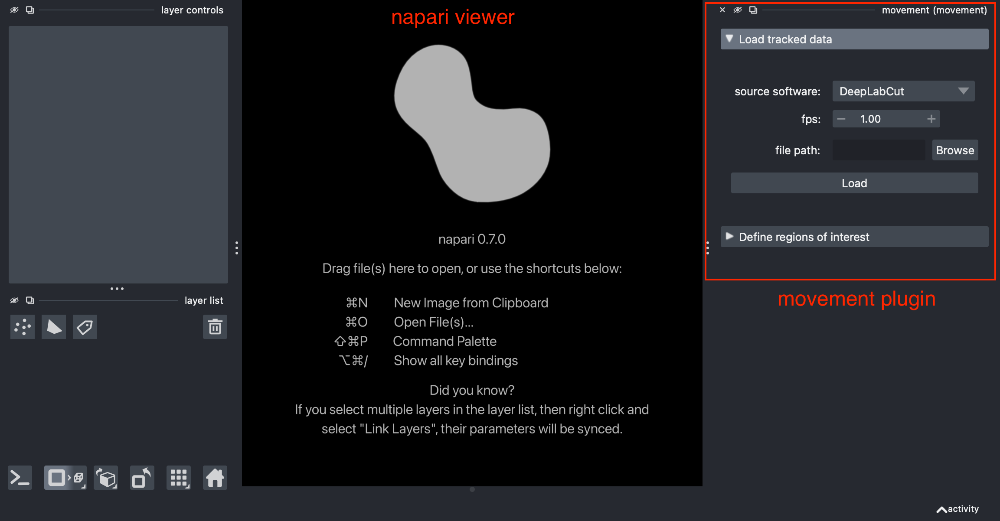
napari window with an empty viewer and the movement plugin docked on the right-hand side.4.2.2 Load a video
Though not strictly necessary, it is often helpful to view the motion tracks overlaid on a background that provides spatial context. You can either load the video corresponding to the dataset, or a single image (e.g. a still frame extracted from that video).
Here we will load mouse044_task1_annotator1.mp4 from the CalMS21 dataset—the same video for which we generated pose tracks in Chapter 3.
Drag and drop the video file directly onto the napari viewer, or click “File” → “Open File(s)”. A pop-up dialog will prompt you to select the reader. Choose “video” and click “OK”. You can optionally choose to remember this choice for future files with the same extension.
The video will be loaded as an image layer with a slider at the bottom for navigating through frames. You may also use the ← and → arrow keys for precise control.
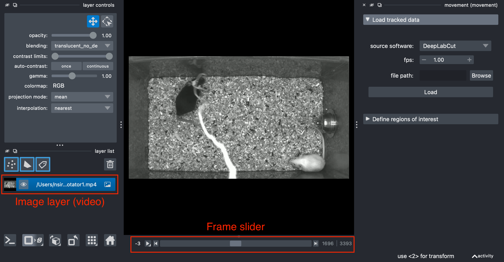
napari as an image layer.Clicking the play button starts the video playback at a default rate of 10 frames per second. You can adjust this by right-clicking on the play button.
4.2.3 Load motion tracks
Now you are ready to load some motion tracks over the video.
On the right-hand side of the window you will see the “Load tracked data” menu. You can load data from one of the supported third-party formats or from a netCDF file saved with movement.
To load tracked data in napari:
- From the “source software” dropdown, select the tracking software you used to generate the data (e.g.
SLEAP). - Specify the video’s “fps” (frames per second) value (e.g.
30). - Click “Browse” and select a file containing the tracked data. This can be the predictions .slp file you generated in Chapter 3 or the
mouse044_task1_annotator1.slpfile provided with the CalMS21 dataset (prerequisites A.4). - Click “Load”.
The data will be loaded into the viewer as a points layer and as a tracks layer. By default, the data is added at the top of the layer list and the points layer is selected.
You will see a view similar to this:
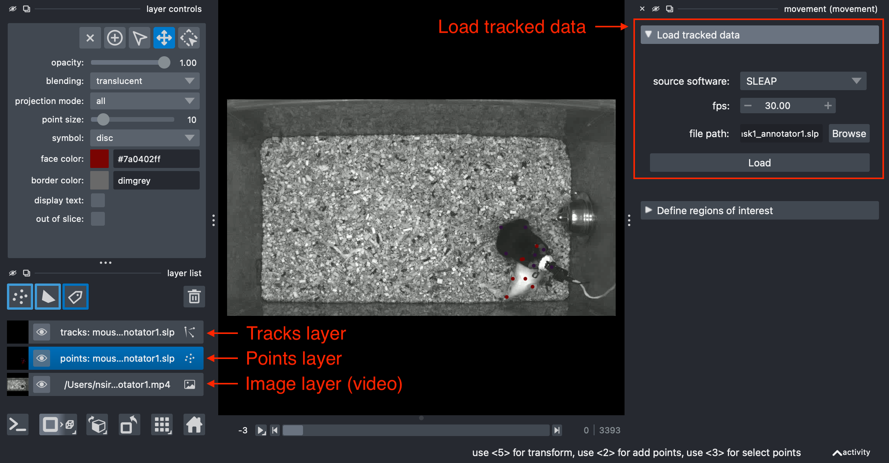
napari as a points and a tracks layer, on top of the image layer containing the video.
NoteLayer types
In napari, data is represented as layers, which can be reordered and toggled for visibility in the layers list panel. There are many types of layers, each corresponding to a different data type, visualisation, and interactivity.
The important layer types for movement are:
- Image layers for displaying images and stacks of images (including videos).
- Points layers for displaying collections of points.
- Tracks layers for displaying collections of trajectories over time.
- Shapes layers for displaying geometric shapes, such as rectangles, circles, and polygons.
4.2.4 Explore motion tracks
Let’s focus on the points layer first (make sure it’s selected), which shows the keypoints detected on the current frame. To reduce visual clutter, you may turn off the visibility of the tracks layer for now by clicking on the eye icon next to the layer name.
Video frames and keypoints are synchronised, so you can see how the keypoints move across frames as you navigate through the video.
Enabling the “display text” option in the layer controls panel will show the keypoint names next to each point.
Hovering your mouse over a point displays a tooltip containing the properties of that point: individual name, keypoint name, time (in seconds), and confidence score.
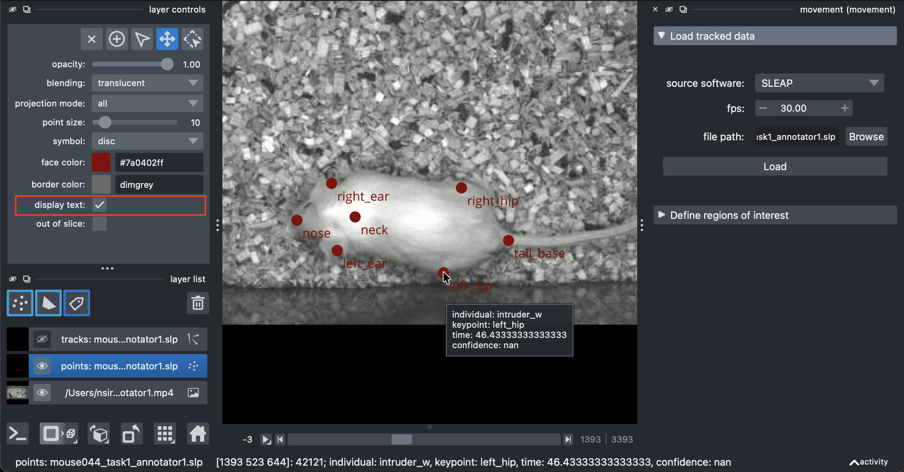
Now select the tracks layer and turn its visibility back on.
The tracks layer lets you to visualise past (tail) and future (head) points relative to the current frame. You can adjust how far these extend using the “tail length” and the “head length” sliders in the tracks layer controls panel. This view is especially useful for identifying tracking errors, such as identity swaps, which are often hard to spot when looking at a single frame.
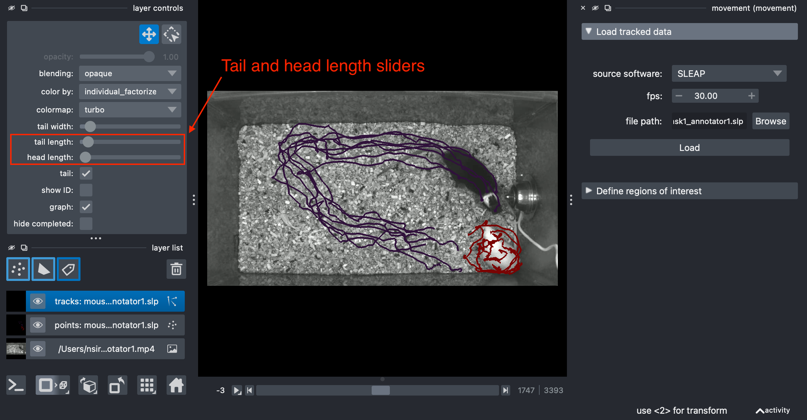
TipDiscuss
- Did you spot any errors in the data you’ve explored?
- What kinds of errors do you expect in pose tracks?
- How can such errors be avoided or corrected?
4.2.5 Additional GUI features
Apart from what we covered above, the movement GUI also allows you to:
- visualise tracked bounding boxes (for the formats that support them), and
- define ROIs and export them for further analysis (covered in Chapter 5).
We are also actively working on adding more features to the GUI, including the ability to manually fix tracking errors.
TipDiscuss
What features would you like to see in the movement GUI?
Visit the movement community page to discover ways to connect with us, share your ideas, and get involved.
4.3 Analyse data in Python
For the rest of this chapter, we encourage you to follow along in a Jupyter notebook or in your favourite Python IDE (see Section A.3.1), using the animals-in-motion-env environment as your Python kernel (see Section A.3.3).
4.3.1 Load a dataset
movement supports many popular animal tracking frameworks and file formats, in 2D and 3D, for single or multiple animals of any species.
This makes analysis pipelines input‑agnostic rather than tied to a specific tool or data format. movement includes input/output functions that translate between various external formats and its native xarray‑based data structure (explained later in this chapter).
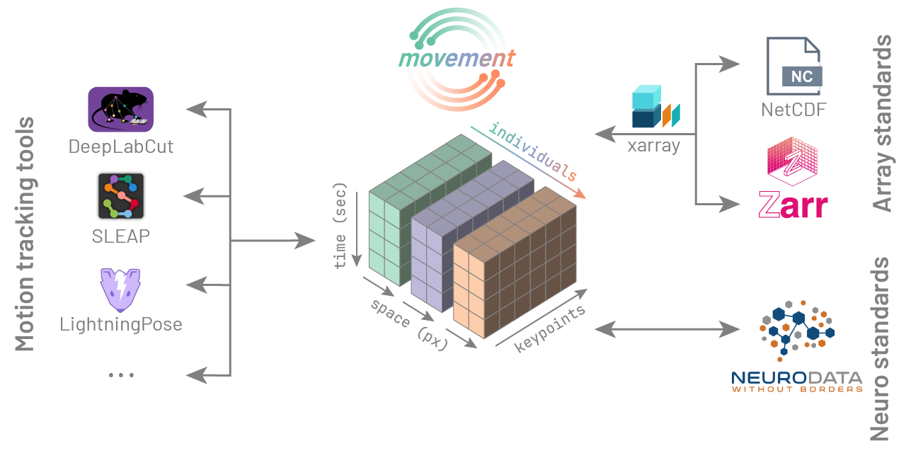
movement’s input/output capabilities.
Let’s see these capabilities in action, by loading the same SLEAP predictions file we explored in the GUI, but this time in Python.
First, let’s define the path to the file we want to load. Here we use a path relative to our home directory, but an absolute path works just as well.
To load the data, we pass the above path to movement’s load_dataset function.
from movement.io import load_dataset
ds = load_dataset(file_path, fps=30)
Note
When we loaded this file in the GUI, this same load_dataset function was called behind the scenes to parse the data into a standardised format that movement can work with.
load_dataset defaults to source_software="auto", which automatically infers the source software (here SLEAP) from the file’s extension and contents. You can override this behaviour by specifying source_software explicitly if you prefer:
ds = load_dataset(file_path, source_software="SLEAP", fps=30)4.3.2 The anatomy of a movement dataset
Let’s look into the dataset we just loaded.
ds<xarray.Dataset> Size: 598kB
Dimensions: (time: 3394, space: 2, keypoint: 7, individual: 2)
Coordinates: (4)
Data variables:
position (time, space, keypoint, individual) float32 380kB 740.9 ... 1...
confidence (time, keypoint, individual) float32 190kB 0.8419 ... 0.7794
Attributes: (5)We are looking at the interactive representation of an xarray.Dataset. What is that? If you’ve never worked with this type of data before, that’s completely fine — we will build up the necessary understanding as we go.
The dataset description refers to dimensions, coordinates, data variables, and attributes. The representation shows the dataset’s dimensions, coordinates, data variables, and attributes. Use the expandable boxes below to learn what each element means.
Putting it all together, a dataset (xarray.Dataset) is a collection of data variables that share some dimensions and coordinates, and may come with some metadata as attributes. Each data variable is a multi-dimensional array (xarray.DataArray) that holds the actual measurements.
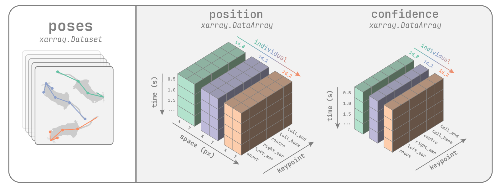
movement dataset containing pose tracks for 3 mice (6 keypoints).
What we just described is a movement poses dataset, for representing pose tracking data. movement also supports bounding boxes datasets, in which each animal is represented by a box that is tracked over time.
The movement dataset guide explains how these dataset types are structured and where they differ.
TipDiscuss
- How would we represent 3D pose tracks in a
movementdataset? What would change? - How about tracking data with only one individual, or one keypoint?
- Can you think of a pose tracking scenario that would not fit into this dataset structure?
Notexarray, numpy, and pandas
If you’ve worked with data in Python before, you may be familiar with numpy and pandas.
xarray builds on top of both, and is a kind of hybrid between them.
- Like
numpy,xarrayprovides multi-dimensional arrays and a rich set of built-in numerical operations. - Like
pandas,xarraydata are labelled, which makes manipulations more readable.
If you are used to working with numpy and pandas, xarray’s syntax will feel familiar. You can also convert xarray objects to the other two formats, if needed.
Export position as a numpy array:
position_array = ds.position.to_numpy()
print(position_array.shape)(3394, 2, 7, 2)Export position as a pandas DataFrame:
position_df = ds.position.to_dataframe(
dim_order=["time", "individual", "keypoint", "space"]
)
position_df.head()| position | ||||
|---|---|---|---|---|
| time | individual | keypoint | space | |
| 0.0 | intruder_w | nose | x | 740.930969 |
| y | 520.531616 | |||
| right_ear | x | 754.939758 | ||
| y | 464.654114 | |||
| left_ear | x | 801.034607 |
4.3.3 Working with movement datasets
Since movement represents motion tracking data as xarray objects, we can use all of xarray’s rich built-in functionalities for data handling.
We can select a subset of data along any dimension, either by integer index (position) or by coordinate label (name).
# First individual, first time point
ds.isel(individual=0, time=0)
# 0-10 seconds, two specific keypoints
ds.sel(time=slice(0, 10), keypoint=["left_ear", "right_ear"])<xarray.Dataset> Size: 17kB
Dimensions: (time: 301, space: 2, keypoint: 2, individual: 2)
Coordinates: (4)
Data variables:
position (time, space, keypoint, individual) float32 10kB 801.0 ... 442.9
confidence (time, keypoint, individual) float32 5kB 0.7985 ... 0.8497
Attributes: (5)We can also ‘chain’ selection operations. For example, we can first access the position data variable, and then select a subset of it:
ds.position.sel(individual="resident_b")<xarray.DataArray 'position' (time: 3394, space: 2, keypoint: 7)> Size: 190kB 849.1 805.2 833.1 809.1 739.1 779.1 ... 154.4 204.6 172.5 100.5 180.5 132.5 Coordinates: (4)
We can do all sorts of computations on the data, along any dimension.
For example, it’s often useful to compute the centroid (centre-of-mass) trajectories of the tracked individuals. Doing this ‘by hand’ would mean averaging the x and y coordinates of all keypoints for each individual at each time point. With xarray, we can express this in a single line of code and xarray handles the dimensionality for us.
centroid_position = ds.position.mean(dim="keypoint")
centroid_position<xarray.DataArray 'position' (time: 3394, space: 2, individual: 2)> Size: 54kB 784.7 790.8 451.5 394.1 785.1 793.8 ... 442.9 162.7 876.6 257.0 442.6 164.5 Coordinates: (3)
What would happen if we instead took the mean across time?
ds.position.mean(dim="time")<xarray.DataArray 'position' (space: 2, keypoint: 7, individual: 2)> Size: 112B 738.0 601.9 755.4 600.6 751.1 594.8 ... 420.3 367.7 441.1 354.6 433.6 359.8 Coordinates: (3)
Note
Averaging over a dimension removes it from the output. In other words, if we average over time, the resulting position no longer varies with time.
We can take a similar approach with many common statistical operators, including minimum (min), maximum (max) and median (median).
# The minimum x positions across time, for every individual and keypoint
min_x = ds.position.sel(space="x").min(dim="time")
min_x<xarray.DataArray 'position' (keypoint: 7, individual: 2)> Size: 56B 111.1 96.23 137.6 96.39 89.63 96.31 117.6 ... 167.7 110.5 113.7 77.0 151.4 79.43 Coordinates: (3)
xarray also provides a rich set of built-in plotting methods for quickly visualising the data. Let’s use xarray.plot.line to create some line plots.
tail_base_pos = ds.sel(keypoint="tail_base").position
tail_base_pos.plot.line(
x="time", hue="individual", row="space", aspect=2, size=2.5
)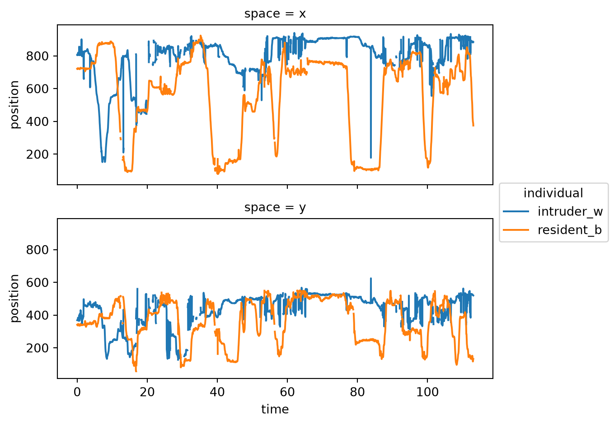
tail_base keypoint across time.
NoteUnderstanding the
plot.line method
The data array before .plot.line—in this case tail_base_pos—provides the values for the y-axis of the figure.
The rest of the arguments map dataset dimensions to visual elements of the plot:
timeis mapped to the x-axis.individualis mapped to hue, so each individual is shown in a different colour.space(thexandycoordinates) is mapped to row, producing separate subplots for each spatial coordinate.- We don’t need to map the
keypointdimension, because we already selected a single keypoint (tail_base) when creatingtail_base_pos.
Experiment with the plot.line command by swapping these mappings around.
The aspect and size arguments control the size and shape of the resulting figure via the formula figsize = (aspect * size, size).
TipExercise 4.1
Keep working with the loaded dataset ds and try the following:
- Select the position of the
neckkeypoint for the first 60 seconds of the recording. - Compute the median position of the
neckacross the selected time window, for each individual. Which individual is closer to the left side of the arena (i.e. wherexis zero)? - Show the centroid position of both individuals as a line plot across time. Plot the
xandypositions on different subplots and assign a different colour to each individual.
Bonus
- Select 3 keypoints of
resident_b, and show their confidence values across time as a line plot. Plot each keypoint on a different subplot. - Visualise the overall distribution of confidence scores in the dataset, using
plot.hist. Does anything surprise you about the distribution?
4.3.4 Clean motion tracks
Referring back to Figure 4.4, we can see that the position trajectories exhibit some problems that are common to pose tracking data:
- There are brief gaps of missing values. These are likely due to occlusions, when a body part is not visible in the video frame.
- There are a few sudden jumps in the trajectories, which look implausible. These can occur when the pose estimation model misidentifies a keypoint, or when the tracking algorithm swaps the identities of two individuals.
movement offers several methods for dealing with errors in motion tracking, as part of its filtering module. These include functions for:
- identifying and removing outliers
- interpolating missing data
- smoothing trajectories over time
Let’s import two such functions from movement.filtering and see them in action.
from movement.filtering import filter_by_confidence, rolling_filterFirst, let’s use filter_by_confidence to drop all positions with confidence scores below a chosen threshold. Dropping here means replacing them with NaN (not-a-number) values, which are recognised as missing data by most scientific computing libraries.
position_filtered = filter_by_confidence(
ds.position, ds.confidence, threshold=0.7, print_report=True
)Missing points (marked as NaN) in input:
keypoint nose right_ear left_ear neck right_hip left_hip tail_base
individual
intruder_w 368/3394 (10.84%) 330/3394 (9.72%) 315/3394 (9.28%) 211/3394 (6.22%) 224/3394 (6.6%) 216/3394 (6.36%) 474/3394 (13.97%)
resident_b 31/3394 (0.91%) 8/3394 (0.24%) 20/3394 (0.59%) 6/3394 (0.18%) 17/3394 (0.5%) 8/3394 (0.24%) 123/3394 (3.62%)
Missing points (marked as NaN) in output:
keypoint nose right_ear left_ear neck right_hip left_hip tail_base
individual
intruder_w 1507/3394 (44.4%) 1617/3394 (47.64%) 1612/3394 (47.5%) 1073/3394 (31.61%) 1384/3394 (40.78%) 1499/3394 (44.17%) 2263/3394 (66.68%)
resident_b 1976/3394 (58.22%) 439/3394 (12.93%) 568/3394 (16.74%) 120/3394 (3.54%) 1287/3394 (37.92%) 497/3394 (14.64%) 1171/3394 (34.5%)The choice of threshold is arbitrary, and should be guided by the confidence score distribution in the dataset, and by inspection of the resulting filtered tracks.
Setting print_report=True prints a report on the number of missing values before and after filtering, so we can see how much data we ‘lost’ in the process.
Let’s generate the same plot as Figure 4.4, but this time with the filtered data.
position_filtered.sel(keypoint="tail_base").plot.line(
x="time", hue="individual", row="space", aspect=2, size=2.5
)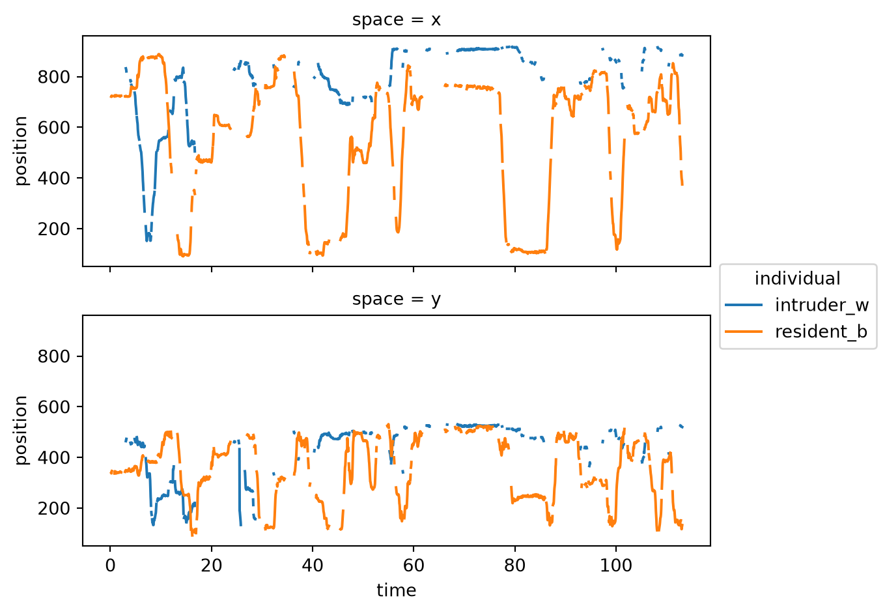
We managed to remove most implausible jumps in the trajectories, but we also introduced more gaps in the data. This is a typical trade-off when filtering data, and settling on the right threshold requires some experimentation.
Even after dropping low-confidence positions, the remaining tracks may still exhibit frame-to-frame jitter—small, noisy fluctuations that do not reflect the animal’s true motion but arise because pose estimation models process each frame independently. A rolling median filter can suppress this noise by replacing each value with the median of the surrounding frames within a sliding window.
Let’s apply rolling_filter to the confidence-filtered positions, using a window of 5 frames:
position_smooth = rolling_filter(
position_filtered, window=5, statistic="median"
)position_smooth.sel(keypoint="tail_base").plot.line(
x="time", hue="individual", row="space", aspect=2, size=2.5
)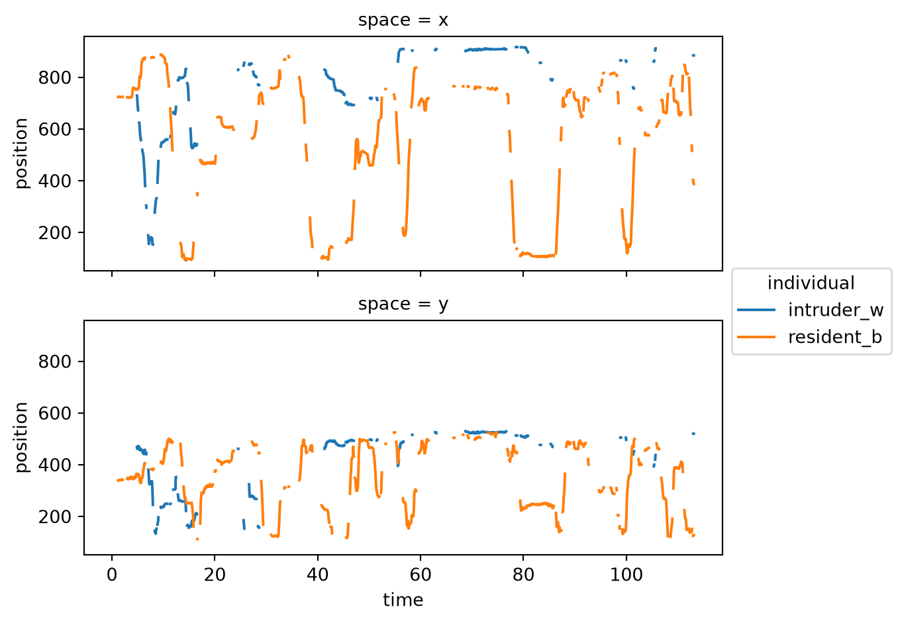
The trajectories are noticeably smoother, but some of the gaps seem to have grown.
TipExercise 4.2
Now experiment with the median filter yourself.
- Try applying
rolling_filtertoposition_filteredwithwindowvalues of 3 and 11 (keepingstatistic="median"). For each, plot thetail_basekeypoint trajectory. How do the results differ?
Bonus
- By default (
min_periods=None), any window containing a NaN returns NaN, expanding existing gaps. Usingwindow=11, try settingmin_periods=1and plot the result. How does the output differ? What is the trade-off? (Tip: setprint_report=Trueto observe the effect on the number of missing values.)
For what follows, we will use the smoothed position data with window=7 and min_periods=2, which we will store as position_smooth.
position_smooth = rolling_filter(
position_filtered, window=7, statistic="median", min_periods=2,
)Let’s compute the centroid trajectories of the smoothed data (centroid_smooth) and plot them across time.
centroid_smooth = position_smooth.mean(dim="keypoint")
centroid_smooth.plot.line(
x="time", hue="individual", row="space", aspect=2, size=2.5
)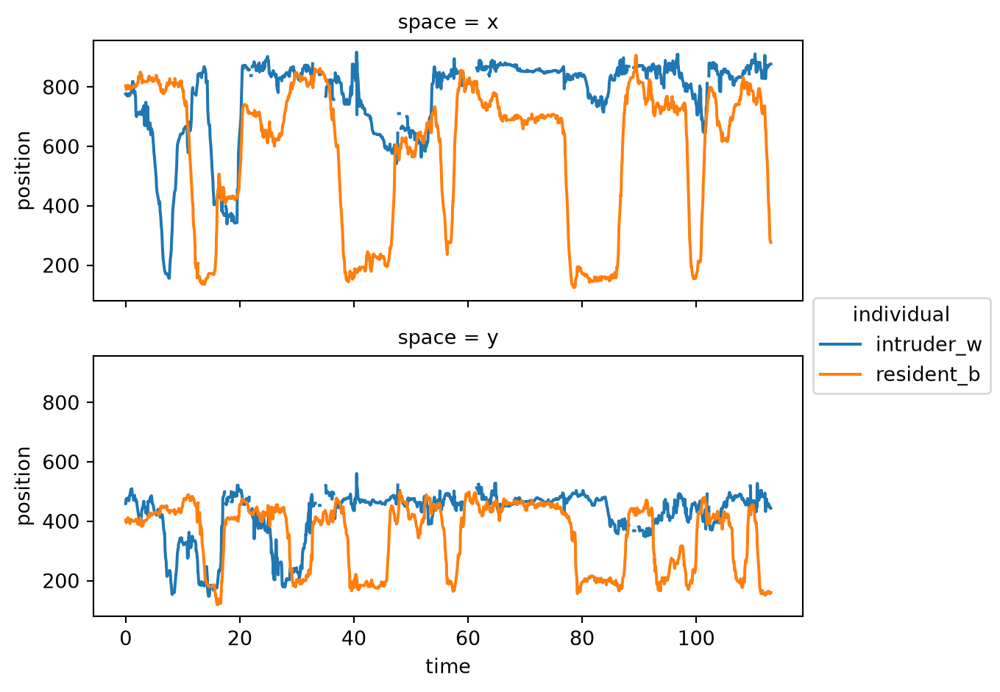
Tip
You can learn more about movement.filtering by going through the following notebooks in movement’s example gallery:
4.3.5 Save movement datasets
If we want to closely inspect what our data cleaning accomplished, it would help to overlay the smoothed motion tracks on the original video in the GUI, like we did in Section 4.2.
To do that, we need to first create a new movement dataset containing the cleaned data, and then save it to disk in a format that the GUI can read.
We can accomplish the first step by updating the position data variable in the original dataset:
ds_cleaned = ds.copy()
ds_cleaned.update({"position": position_smooth})
ds_cleaned<xarray.Dataset> Size: 598kB
Dimensions: (time: 3394, space: 2, keypoint: 7, individual: 2)
Coordinates: (4)
Data variables:
position (time, space, keypoint, individual) float32 380kB nan ... 125.4
confidence (time, keypoint, individual) float32 190kB 0.8419 ... 0.7794
Attributes: (5)This dataset is in every way identical to the original one, except that the position data variable now contains the filtered and smoothed data.
For saving datasets to disk, we recommend leveraging xarray’s built-in support for the netCDF file format.
import xarray as xr
save_path = predictions_dir / "ds_smooth.nc"
ds_cleaned.to_netcdf(save_path)The same dataset can be loaded back into Python with xr.open_dataset(save_path), or into the GUI by selecting “movement (netCDF)” as the source software when loading tracked data.
TipDiscuss
Repeat the workflow outlined in Section 4.2, but this time load the cleaned dataset ds_smooth.nc instead of the original SLEAP predictions file.
Keep in mind that the tracks layer display linearly interpolates between consecutive points, so the gaps in the original data will be filled in with straight lines. You’re better off turning off the tracks layer visibility and focusing on the points layer, which shows the actual positions of the keypoints.
Are you happy with what you see? If not, what would you do differently?
NoteExporting to other file formats
Saving to netCDF is the recommended way to preserve the complete state of your movement analysis, including all variables, coordinates, and attributes. That said, in some cases it’s useful to export data back to the original DeepLabCut or SLEAP formats, or to neuroscientific standards like NWB files.
movement provides some functions for exporting datasets to third-party formats, which you can find in the input/output section of the documentation.
4.3.6 How far apart are the two mice?
The resident-intruder assay is, at its core, about a social interaction between two animals. A natural first question is therefore: how far apart are the two mice at each moment in time?
We can look into the movement.kinematics module, which provides functions for deriving various useful quantities from motion tracks, such as velocity, acceleration, distances, orientations, and angles.
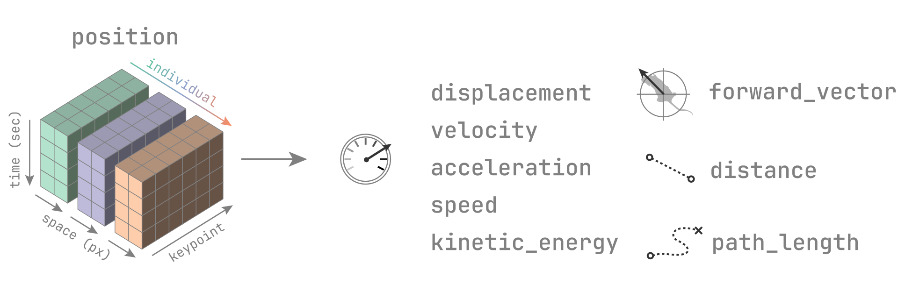
position using movement.kinematics.
The most suitable function to help us answer the above question is compute_pairwise_distances, which computes distances between pairs of individuals (or, if we prefer, between pairs of keypoints).
As a starting point for all quantifications, we will use the smoothed centroid trajectories we computed at the end of the cleaning step (see Figure 4.7).
from movement.kinematics import compute_pairwise_distances
distance = compute_pairwise_distances(
centroid_smooth, dim="individual", pairs={"resident_b": "intruder_w"}
)
distance<xarray.DataArray 'distance' (time: 3394)> Size: 27kB 62.08 61.92 74.21 80.68 80.2 79.35 77.14 ... 653.2 657.7 659.2 663.7 664.0 664.6 Coordinates: (1) Attributes: (1)
We asked for distances along the individual dimension, and specified a single pair of individuals. The individual dimension therefore disappears from the output, leaving us with a 1-dimensional array holding one distance value—in pixels—per time point.
Let’s plot it.
distance.plot.line(x="time", aspect=3, size=2.5)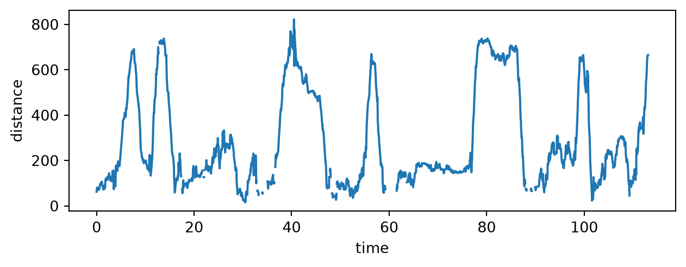
The two mice repeatedly come together and move apart again, so this single variable already gives us a compact, high-level summary of the encounter.
TipDiscuss
The distance is measured in pixels. What would you need to know to express it in centimetres instead?
TipExercise 4.3
Knowing where the mice are relative to each other tells us when they meet, but not what they do when they get there. Perhaps we can get a sense of their activity levels during close encounters by looking at their instantaneous speed over time.
- Use
compute_speedto compute the speed of each mouse’s centroid across time. - Plot the speed of both mice on separate rows. Which mouse appears more active overall?
Bonus
- Now plot the intruder’s speed and the inter-mouse distance on top of each other, sharing a common time axis. What relationships—if any—can you spot between the two? (Tip: Use
matplotlibto create the figure.) - What proportion of time do the two mice spend with their centroids within 130 pixels (roughly equal to 1 mouse body length in this video) of each other? (Tip: Look up and use the
xarray.wheremethod.)
Tip
You can learn more about movement.kinematics by going through the following notebooks in movement’s example gallery:
We will also cover some more advanced kinematic analyses in the next two chapters—Chapter 5 and Chapter 6—where we will apply movement to some real-world datasets.
4.4 Join the movement
This chapter does not represent a full list of movement’s current and future capabilities. The package will continue to evolve as it’s being actively developed by a core team of engineers (the authors of this book) supported by a growing, global community of contributors.
We are committed to openness and transparency and always welcome feedback and contributions from the community, especially from practising animal behaviour researchers, to shape the project’s direction.
Visit the movement community page to discover ways to connect with us, share your ideas, and get involved.
Tip
If you have ideas for improving movement, you can suggest them for the collaboration days!
4.5 Solutions
Click each solution to reveal it.
TipExercise 4.1
The neck position for the first 60 seconds:
neck_pos = ds.position.sel(keypoint="neck", time=slice(0, 60))We first compute the median across time for the above variable. Then we show the x coordinates of that median.
neck_pos_median = neck_pos.median(dim="time")
neck_pos_median.sel(space="x")<xarray.DataArray 'position' (individual: 2)> Size: 16B 747.9 646.9 Coordinates: (3)
We can see that resident_b is closer to the left side of the arena (smaller x value).
The centroid position of each individual is plotted across time.
centroid_pos = ds.position.mean(dim="keypoint")
centroid_pos.plot.line(
x="time", hue="individual", row="space", aspect=2, size=2.5
)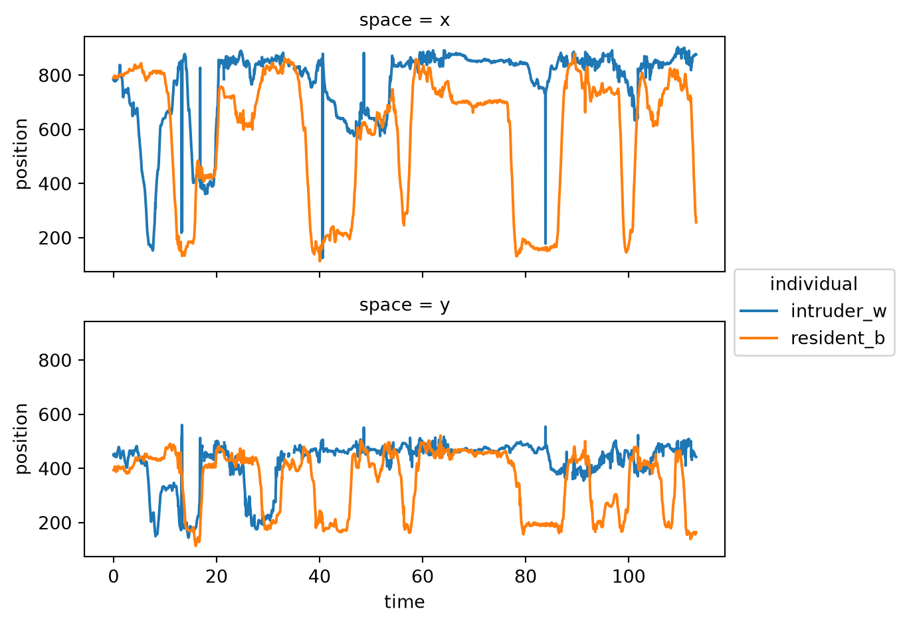
Bonus
We select 3 keypoints on the head of resident_b and plot their confidence scores across time.
head_conf = ds.confidence.sel(
individual="resident_b",
keypoint=["nose", "left_ear", "right_ear"]
)
head_conf.plot.line(
x="time", row="keypoint", aspect=2, size=2.5
)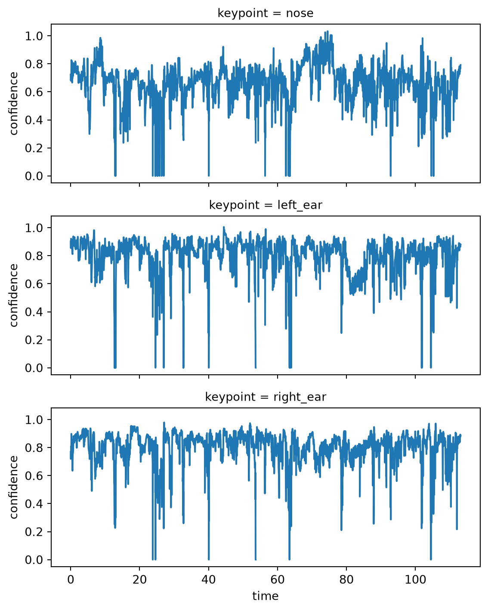
The overall distribution of confidence scores as a histogram.
ds.confidence.plot.hist(bins=50, aspect=2, size=2.5);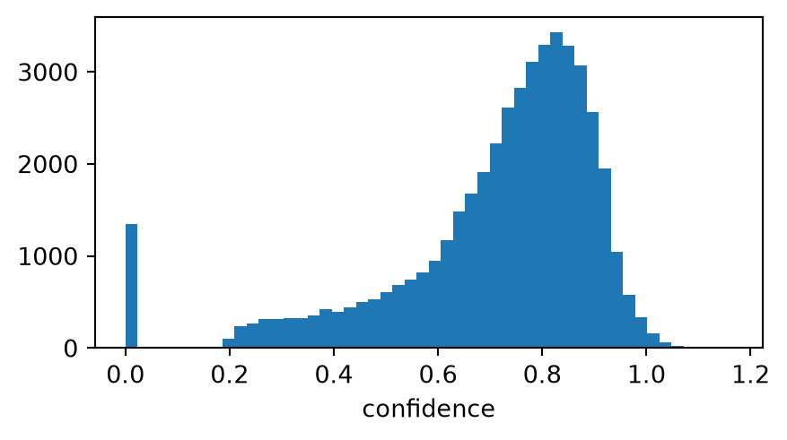
Surprisingly, a few confidence scores have values >1.0. That’s because SLEAP’s point-wise confidence scores—unlike the likelihood scores output by DeepLabCut—are not confined to the [0,1] range.
TipExercise 4.2
We apply the filter with two different window sizes and plot the tail_base trajectory each time.
rolling_filter(
position_filtered, window=3, statistic="median"
).sel(keypoint="tail_base").plot.line(
x="time", hue="individual", row="space", aspect=2, size=2.5
)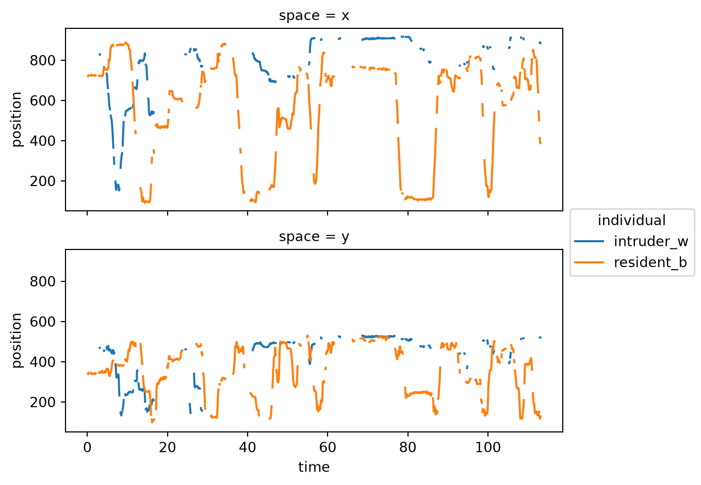
rolling_filter(
position_filtered, window=11, statistic="median"
).sel(keypoint="tail_base").plot.line(
x="time", hue="individual", row="space", aspect=2, size=2.5
)
With window=3 the result is very close to the unsmoothed data—only the sharpest single-frame spikes are removed. With window=11 the trajectory is much smoother, but also contains much longer gaps.
Bonus
Now we compare the default min_periods=None against min_periods=1 with window=11.
rolling_filter(
position_filtered, window=11, statistic="median"
).sel(keypoint="tail_base").plot.line(
x="time", hue="individual", row="space", aspect=2, size=2.5
)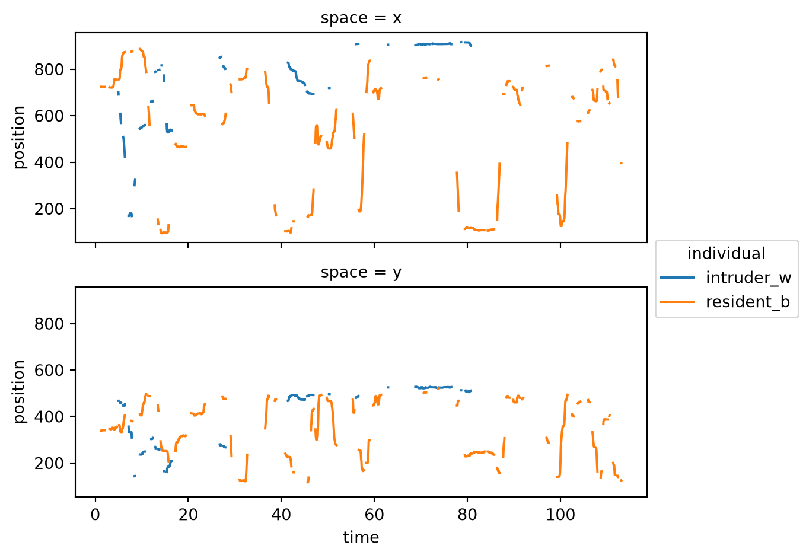
rolling_filter(
position_filtered, window=11, statistic="median", min_periods=1
).sel(keypoint="tail_base").plot.line(
x="time", hue="individual", row="space", aspect=2, size=2.5
)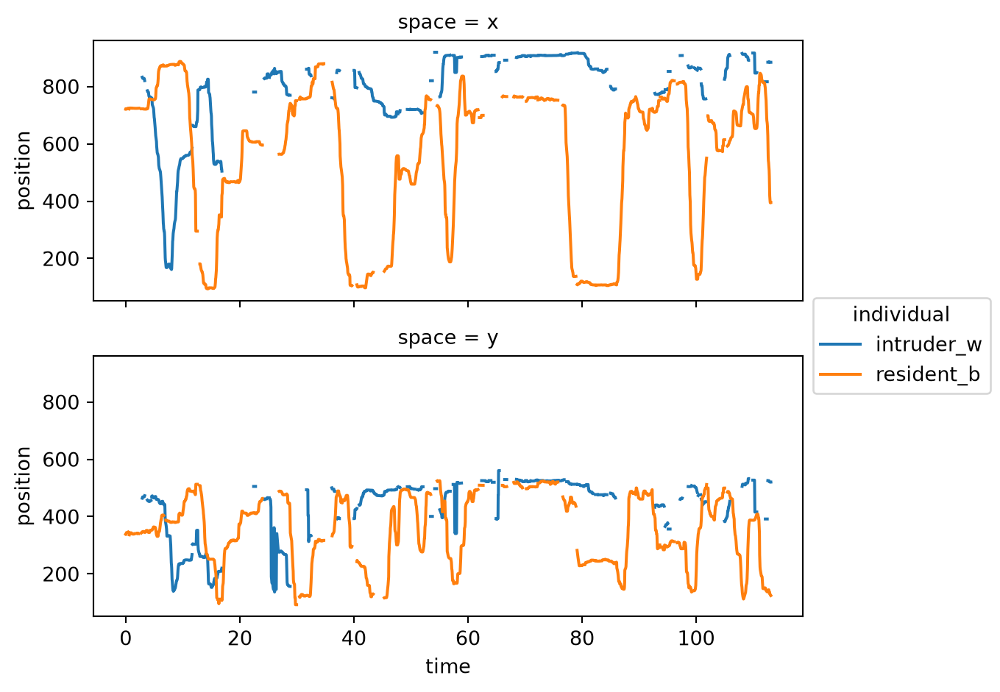
By default, whenever one or more NaNs are present in the window, a NaN is returned to the output array. As a result, any stretch of NaNs present in the input data will be propagated proportionally to the size of the window (specifically, by floor(window/2)). To control this behaviour, the min_periods option can be used to specify the minimum number of valid (non-NaN) values required in the window to compute a result. For example, setting min_periods=1 will result in the filter returning NaNs only when all values in the window are NaN, since 1 valid value is sufficient to compute the result.
TipExercise 4.3
We compute the speed of each centroid. The output keeps the individual dimension, giving us one speed trace per mouse.
from movement.kinematics import compute_speed
speed = compute_speed(centroid_smooth)
speed<xarray.DataArray 'speed' (time: 3394, individual: 2)> Size: 27kB 10.42 1.89 227.4 18.92 232.3 235.2 12.75 ... 10.64 83.75 9.583 6.462 17.47 0.0 Coordinates: (2)
We plot the speed of both mice on separate rows.
speed.plot.line(x="time", row="individual", aspect=2, size=2.5)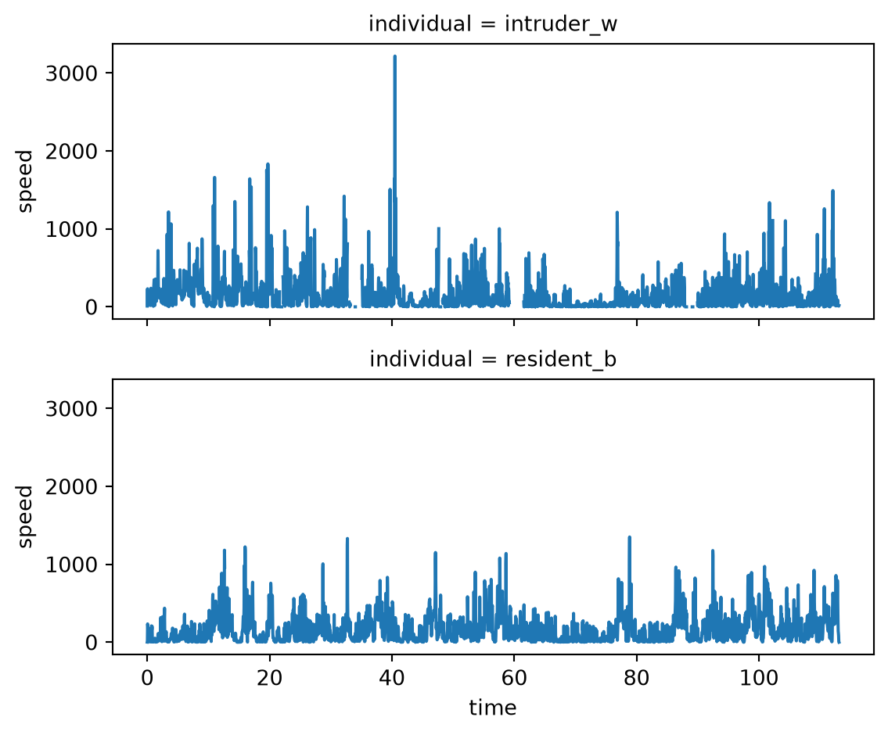
The intruder appears more active overall, with higher-amplitude speed bursts. But beware: the speed spike near the 40-second mark looks like an artefact that has lingered despite our cleaning; 3000 pixels per second doesn’t look plausible.
Bonus
We select the intruder’s speed and place it alongside the inter-mouse distance in two stacked subplots that share a common time axis.
import matplotlib.pyplot as plt
intruder_speed = speed.sel(individual="intruder_w")
fig, axes = plt.subplots(2, 1, sharex=True, figsize=(7, 5))
intruder_speed.plot.line(x="time", ax=axes[0])
axes[0].set_ylabel("speed (pixels/s)")
axes[0].set_xlabel("")
distance.plot.line(x="time", ax=axes[1], color="black")
axes[1].set_ylabel("distance (pixels)")
fig.tight_layout()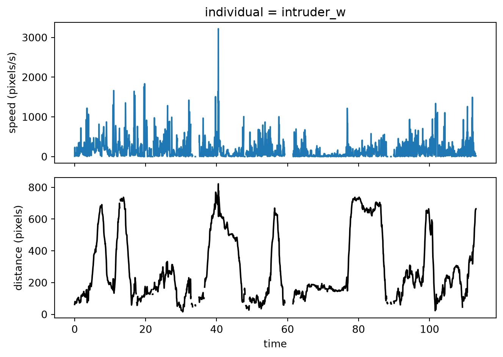
To find what proportion of frames the two mice spend within 130 pixels of each other, we use xarray.where to retain only the frames meeting that condition and compare the count of remaining values to the total.
close = distance.where(distance < 130)
proportion = close.count() / distance.count()
print(f"{proportion.item():.1%} of frames have centroids within 130 pixels of each other.")24.7% of frames have centroids within 130 pixels of each other.